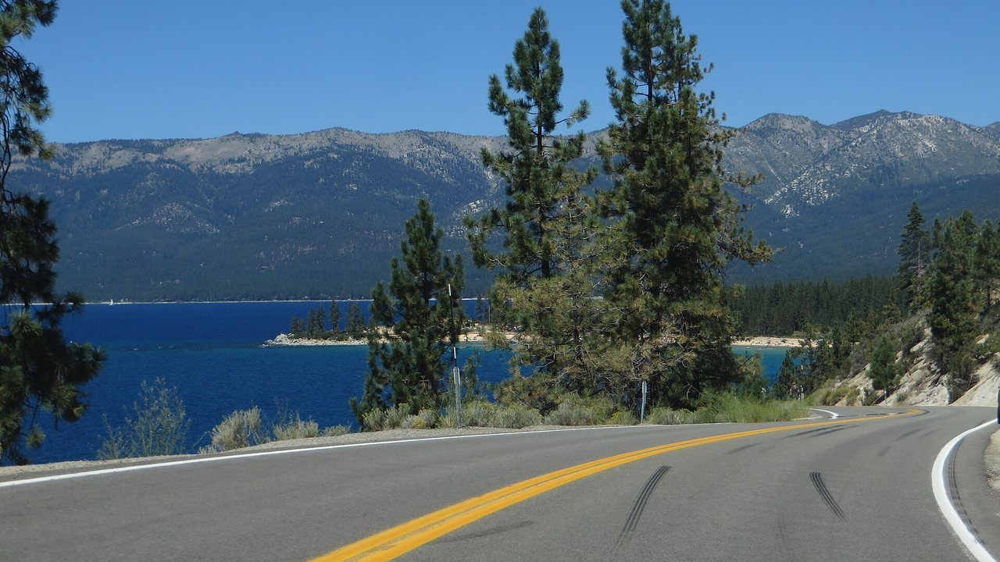

Race, Lake Tahoe

Behind
Best +0:01
371W
Target 418 W-47 W
- Cadence
- 87rpm
- Heart
- 140bpm
- Speed
- 26.5km/h
Warm-up1 of 19
4:42
Next: · 2:00 at level 22
-1.3%
0 m climbed
0.12 km
13
Resistance / 32
Solo races your best-time ghost: position reads Ahead or Behind, and solo alone gets a Pause button. Frozen at 0:18.